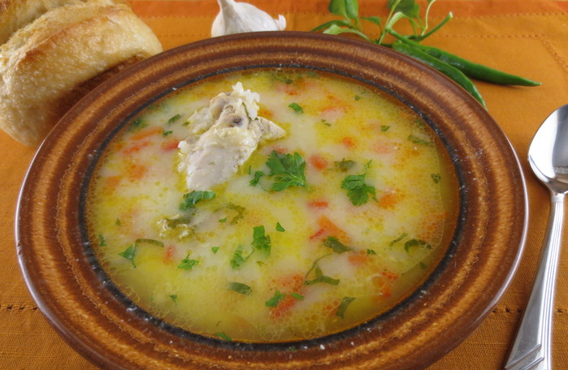

Funny Garlic Soup

Description
"Dare to taste Dracula's Garlic Soup! This recipe brings an explosion of flavors in a garlic masquerade. A delight for culinary adventurers who aren't afraid to add a bit of vampirism to their plate."
Ingredients
- 1 head of garlic (or more if you're brave)
- 1 onion, finely chopped
- 2 potatoes, diced
- 1 liter of chicken broth (or vegetable for the vegetarian version)
- 2 tablespoons of olive oil
- Salt and pepper, to taste
- Croutons (optional, for the brave)
Steps
- In a large pot, heat the olive oil and sauté the onion until golden.
- Add the potatoes and garlic (sprinkle some dark magic).
- Pour in the broth and simmer until the potatoes are tender and the garlic makes its mysterious presence felt.
- Blend the soup (or not, for the brave).
- Add salt and pepper to taste. Optionally, serve with croutons to test your courage.
- Enjoy the soup with a touch of humor and a lot of courage!